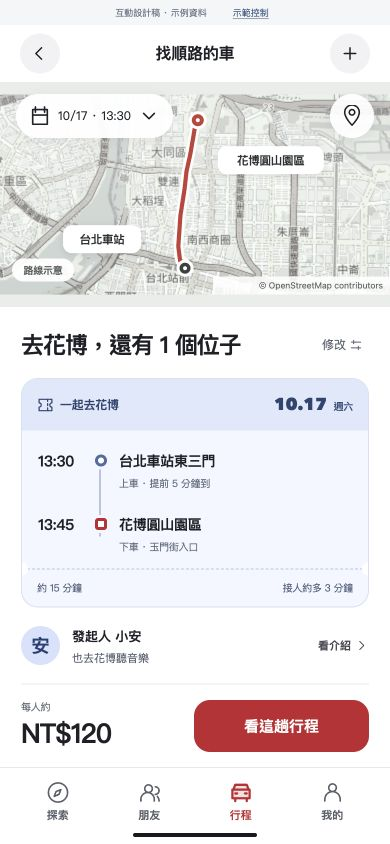
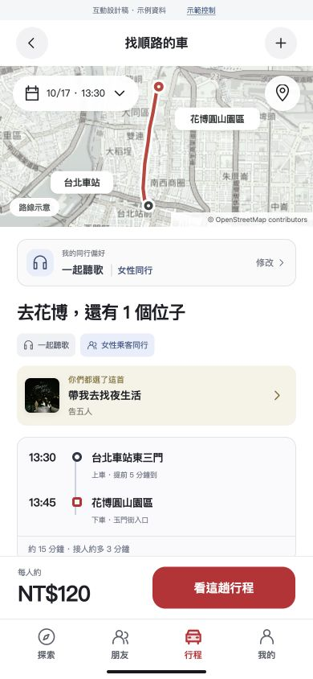
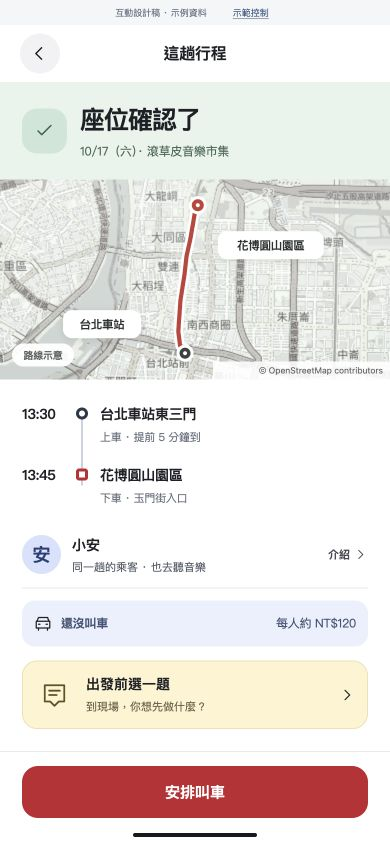
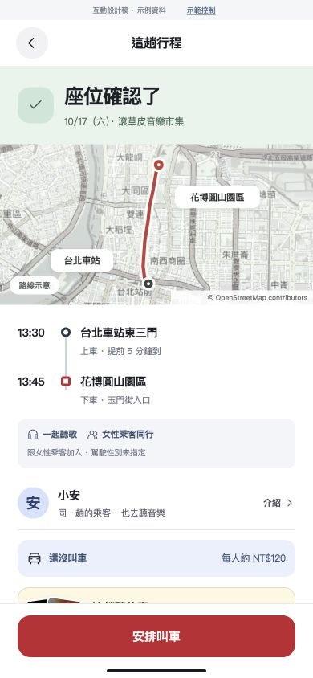
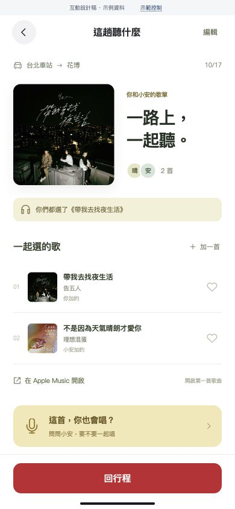

左邊 V5，右邊 V6。新增音樂互動與同行偏好，沿用活動與搭車流程。
找車時能調整車上氣氛與同行條件，再看雙方選過的共同歌曲。


時間、接點與費用照樣清楚。行程成立後，從同一頁加入這趟歌單，或選一題聊聊。


從平常聽的歌，到同行歌單，再留下這趟的回憶。
選 1–3 首，找出具體的共同喜好。

各加一首，看得到誰點的歌。
雙方想唱、車輛也開放，再開始。
抵達後，收藏這次一起選的歌。
歌曲共同點由本人選歌與示例人物的歌曲 ID 比對。歌單操作存於此瀏覽器，歌曲開啟 Apple Music 原站；沒有 App 內串流或跨帳號同步。「女性乘客同行」不指定駕駛性別。看完整互動機制